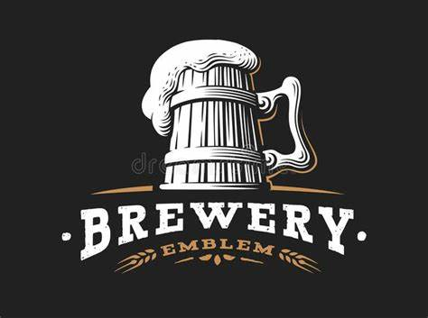
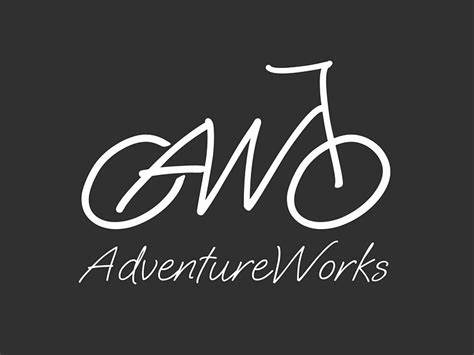
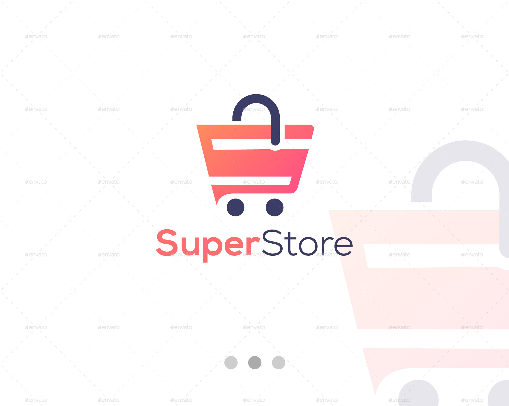

This project involved analyzing Adidas sales data for 2020 and 2021, sourced from Kaggle. After cleaning the dataset, I utilized Power BI to create interactive dashboards and visualizations. The project highlights key sales trends, top-performing products, and regional sales performance, providing valuable insights for strategic decision-making.

This project focused on analyzing brewery market data to uncover valuable insights. After cleaning and preparing the dataset, I used Excel to create various visualizations and dashboards. The project highlights key market trends, top-performing regions, and seasonal demand variations, providing actionable insights for strategic decision-making.

In this project, I used the Adventure Works 2019 database to perform various SQL queries. The project involved writing and executing different types of queries to analyze sales data, customer information, and product details. The queries included joins, subqueries, aggregations, and window functions to extract meaningful insights and support business decision-making processes.

This project involved analyzing sales data from Edenbridge Super Store for the years 2011 to 2013 using Power BI. After cleaning the dataset, I created interactive dashboards to visualize key sales trends, product performance, and customer demographics. The analysis provided valuable insights into top-performing products, sales seasonality, and customer purchasing behavior, aiding strategic decision-making to improve business operations and customer satisfaction.